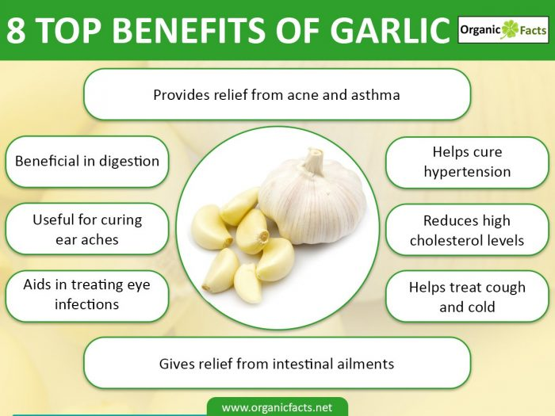

Garlic Is Great!
Health Benefits Of Garlic
A regular intake of garlic reduces the risk of colon, stomach, and esophageal cancer. It aids in reducing the production of carcinogenic compounds, and also reduces the occurrence of tumors associated with breast cancer. The health benefits of garlic are further known to enhance the libido of both men and women. Garlic clears up most intestinal problems like dysentery, diarrhea, and colitis. Its role in dispelling worms is phenomenal. It does not affect the functioning of useful organisms in the intestine, which aid in digestion, but it does destroy the harmful bacteria present in the intestines. Daily inclusion of garlic in your diet aids in eliminating any digestive problems. The herb assists in the normal functioning of the intestines for good digestion. Even swelling or irritation of the gastric canal may be rectified with garlic as a treatment.
